Your music is personal. Your app should be too.
Crate turns your Apple Music library into a room full of records you actually own: flip through them, ask for a playlist in plain words, make mixtapes, and see every play you've ever made.
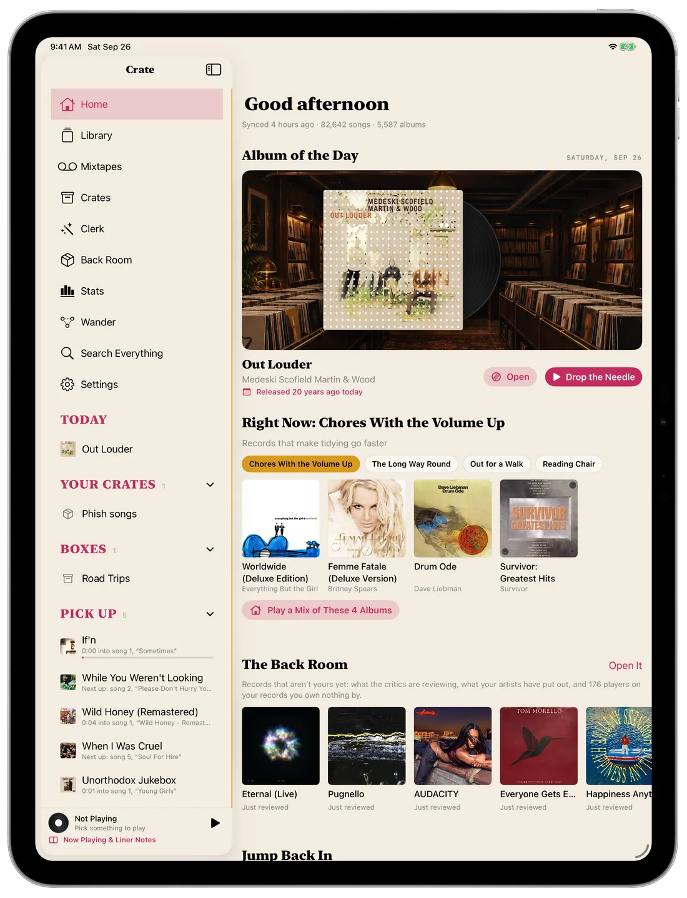
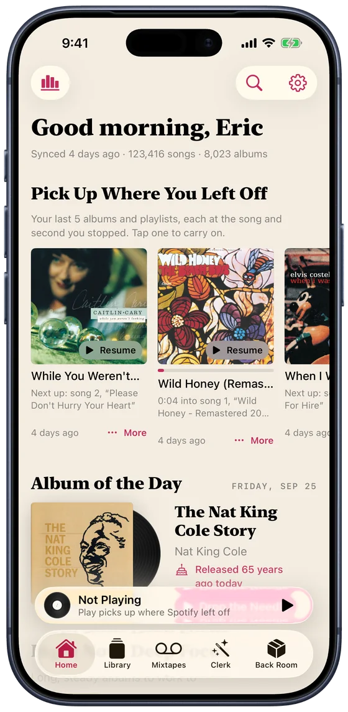
One record, every way you hold it.
Crate follows the room it's given, not the name of the device. Fold or unfold at any moment and you're still on the same page, with the same record playing.
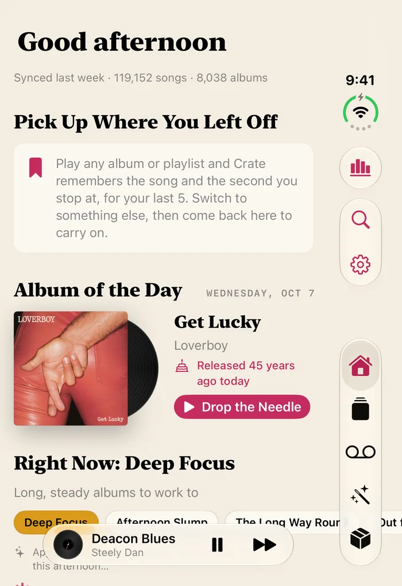
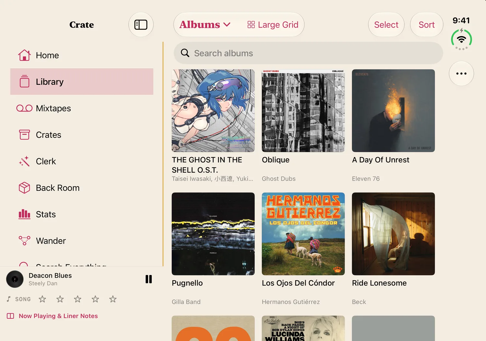
Turned upright
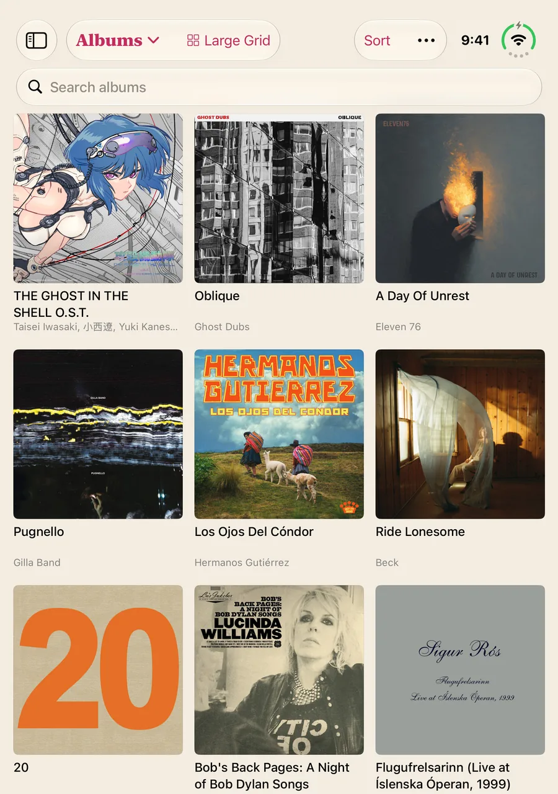
Say what you want to hear.
Type it the way you'd say it to a friend who knows your records. Apple Intelligence reads it, and the Clerk builds the list from songs you already have, never from a stranger's chart.
- Moods, decades, tempo, key, length, "like Tom Waits but not Tom Waits", songs you haven't played since 2012
- Swap, Keep or Remove any song, or ask "Why?" and it tells you
- Save any list as a mixtape, or have it pick fresh every week
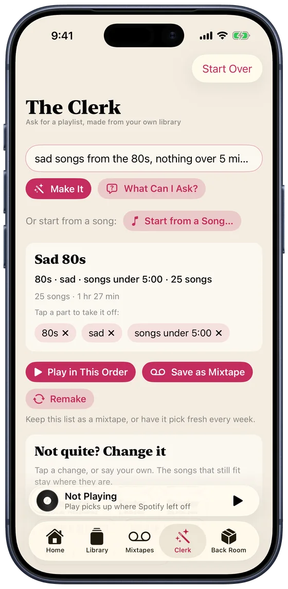
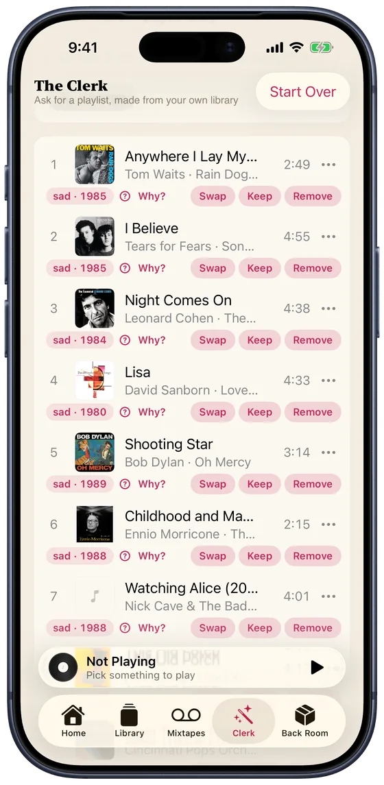
Tap a slip. Each one was typed into the Clerk and run on a real Apple Music library, using Apple Intelligence on the device: what it understood, the songs it pulled, and what it said when part of a request was beyond it.
“Motown for a road trip, nothing slow”
- ABC1992Jackson 5
- War1970Edwin Starr
- Higher Ground1973Stevie Wonder
- First I Look at the Purse (Single Version)1992The Contours
- I Can't Get Next to You1992The Temptations
- What's Going On (Single Version / Mono)1992Marvin Gaye
+ 19 more on the list
“rainy Sunday morning, nothing with vocals”
- Quicksilver Glide Divine1992Spectrum
- Sweet Lullaby (Ambient Mix)1992Deep Forest
- Kneeling Down2004Tord Gustavsen Trio
- Let's Get It On (2008 Re-edit)2008Roni Size & Reprazent
- A Job Well Done1991Jim Chappell
- Behind the Waterfall1985David Lanz & Paul Speer
+ 19 more on the list
“Leonard Cohen songs sung by anybody but Leonard Cohen”
- Famous Blue Raincoat1987Jennifer Warnes
- The Stranger Song1995Emmylou Harris
- Coming Back to You1987Jennifer Warnes
- The Future2012Eleni Mandell
- Diamonds in the Mine2025Cass McCombs
- If It Be Your Will (Reprise)1987Jennifer Warnes
+ 9 more on the list
MusicBrainz says who wrote each of these, so songs they only sang (traditional ones, or other people’s) are left out.
“70s soul for a dinner party that builds”
- Creation (Epilogue)1972The Jimmy Castor Bunch
- Never Dreamed You'd Leave In Summer1971Stevie Wonder
- Open Our Eyes1974Earth, Wind & Fire
- Easy Goin' Evening (My Mama's Call)1976Stevie Wonder
- The Look of Love1971Isaac Hayes
- Let's Burn Down the Cornfield1974Etta James
+ 19 more on the list
“sad songs from the 80s, nothing over 5 minutes”
- The Courtyard1988Nightnoise
- In The Death Cell (Love Theme Reprise)1980Queen
- Man In the Long Black Coat1989Bob Dylan
- Un sacco bello (tema di Marisol 7) [Colonna sonora del film "Un sacco bello"]1980Ennio Morricone
- Tango Till They're Sore (2023 Remaster)1985Tom Waits
- Slip Slidin' Away (Live)1982Simon & Garfunkel
+ 19 more on the list
“songs with trains in the title”
- Slow Train (Soundcheck)2017Bob Dylan
- Fast Train2002Solomon Burke
- Riding On a Railroad (Live)1993James Taylor
- My Baby Thinks He's A Train1962Rosanne Cash
- Take the "A" Train1993Dave Grusin
- Hear My Train A-Comin' (Live At Berkeley Community Theatre, Berkeley, CA)2001Jimi Hendrix
+ 19 more on the list
Matched by words in the titles (train or railroad), not by what the songs are about: Crate can’t read lyrics.
“Icelandic polka”
- Lakehouse (2011 Iceland Release Version)2011Of Monsters and Men
- Sé lest Pt. 1 (The Tape Variations)2025Sigur Rós
- Fuglar2002K.U.K.L.
- Animal Arithmetic2010Jónsi
- Quicksand2015Björk
- Bak Þitt Er Sem Rennibraut2012múm
+ 19 more on the list
The Clerk didn’t know what to do with “polka”, so the list leaves it out and goes by the rest.
Mixtapes that keep themselves up to date.
Set the rules once, like "added in the last month" or "the '90s and not played lately", and the tape changes as your library does. Describe one in a sentence and Apple Intelligence writes the rules for you to check.
Every tape gets a painted cover and a label in your hand. Pick a length from a C46 to a C120 and it splits into Side A and Side B, with a printed insert of liner notes. Crate can also copy it into the Music app as an ordinary playlist, so it follows you to every Apple device and the car.
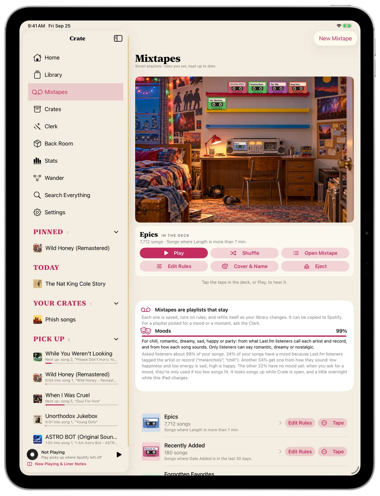
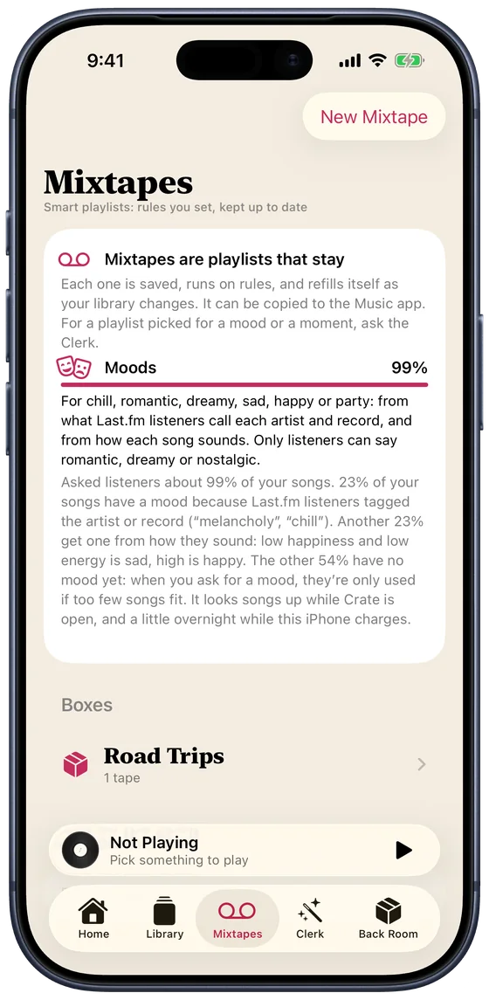
Liner notes for every album, and room for your own.
Open any record's liner notes: the story of how it was made, who played on it and where it was recorded, and a side all about you and this album, from your first play to your favourite song on it.
Then write on the sleeve. A note of your own, in your own words: where you first heard it, which side to start with, who it reminds you of. It shows on the album everywhere, travels to your other devices through iCloud, and mixtapes can pick songs by what you wrote.
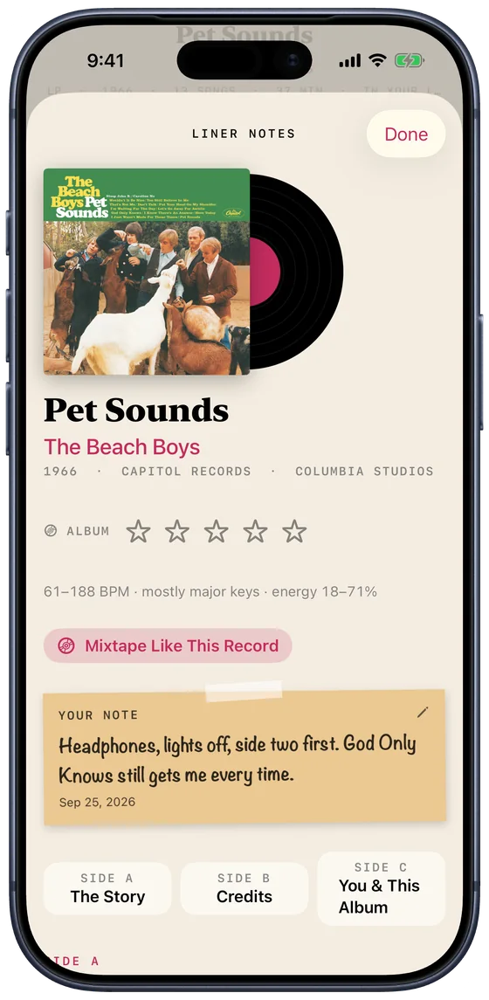
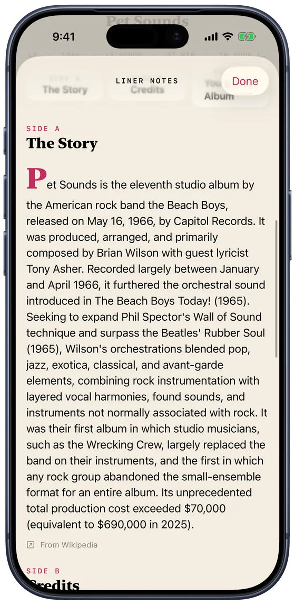
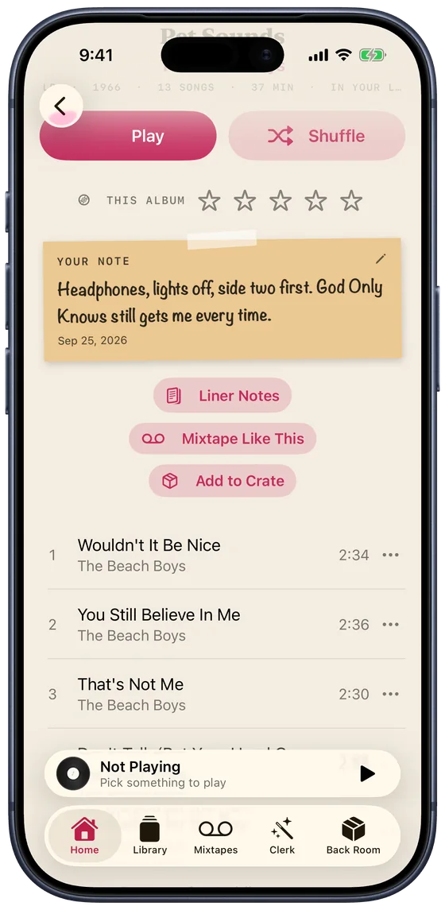
Pick up where you left off, to the second.
Crate keeps your five most recent albums or playlists, each saved at the song and the second you stopped. Tap one and it plays on from exactly there.
They follow you: stop a record on your iPhone and it's waiting in your iPad's sidebar, and on CarPlay when you get in the car.
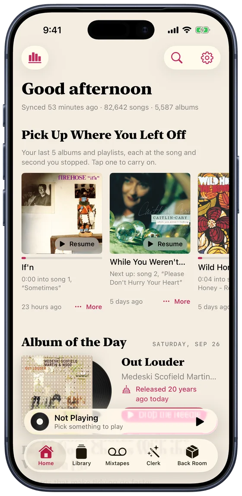
The whole discography, and what's missing from yours.
Open an artist and their records are laid out the way a collector thinks: Albums, Live, Compilations, Soundtracks, Singles & EPs. The ones you have wear a ribbon. The rest are one tap from your library.
"You have 30 of their 54 studio albums." Crate checks MusicBrainz so a live album isn't filed as a studio one, and a soundtrack with one of their songs on it isn't counted as theirs.
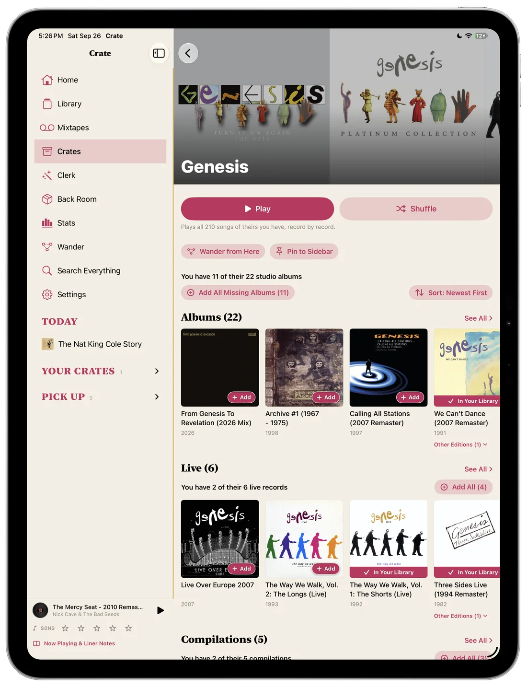
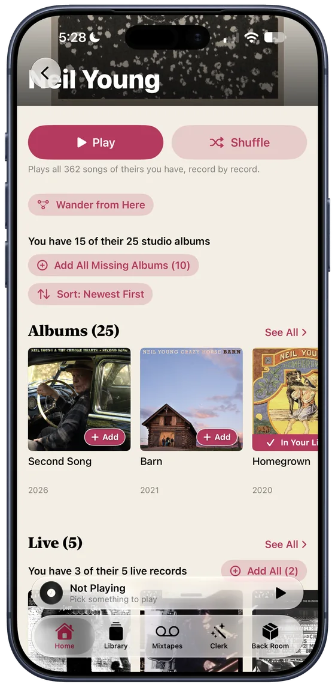
Flip through the rack and see where it takes you.
Wander stands artists in the bin of a record shop. Pull one out to hear it, keep it for a crate, or wander on to the next. Any artist works, whether you own them or not.
Every look has a shop of its own, and Follow the Music puts a record in the shop that would stock it: a jazz record in the jazz club. Flip through all seven like records in a crate: tap a tab or the front card, swipe, or use the arrow keys.
A listening room for what's new.
Take a record off the ledge and put it on the stand: its score, when it was reviewed, and a button to hear thirty seconds. Browse by this week's reviews, by new releases from artists in your library, by more from the ones you love, or by the people who played on them.
The video at the top of the page is this room in motion.
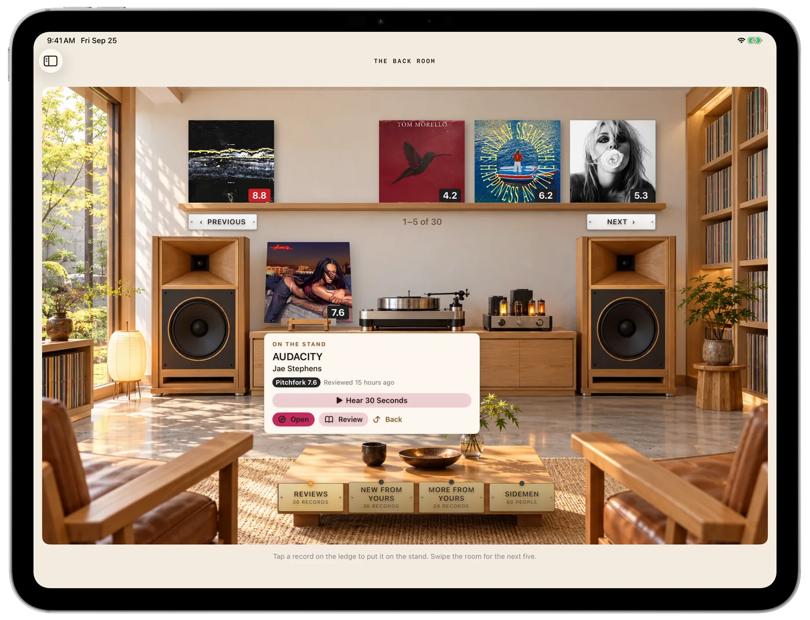
Every play, year by year, down to the song.
Stats shows what you really have and how you really listen. Open a year, then a month, then a day, and see each song you played and when. It updates as each song ends.
A real library, as the screenshots show it. Crate starts from Apple Music's own play counts, keeps every play it sees as it goes, and Last.fm can fill in everything before.
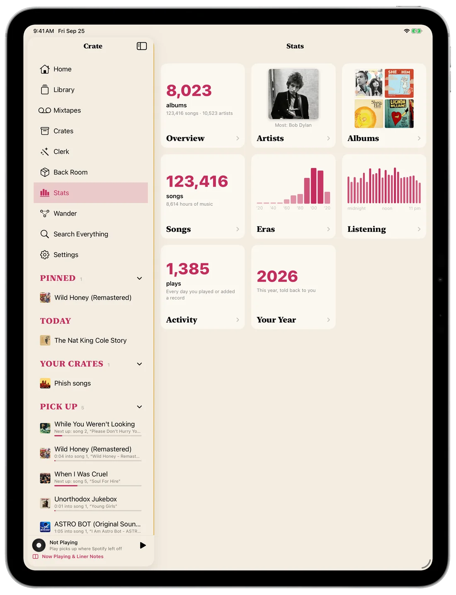
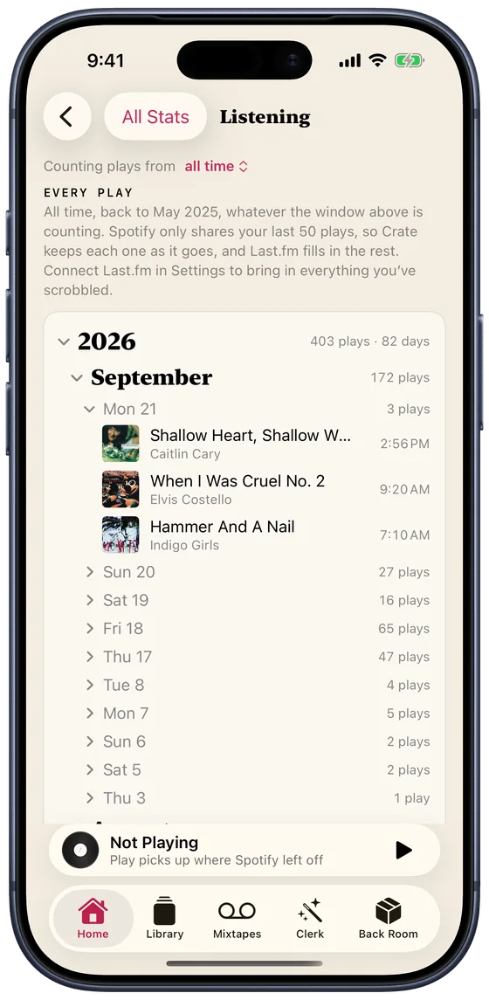
Dress it like your favourite corner of music.
Each look has its own colours and its own typeface, checked for contrast in light and dark. Or let Crate change look every day.
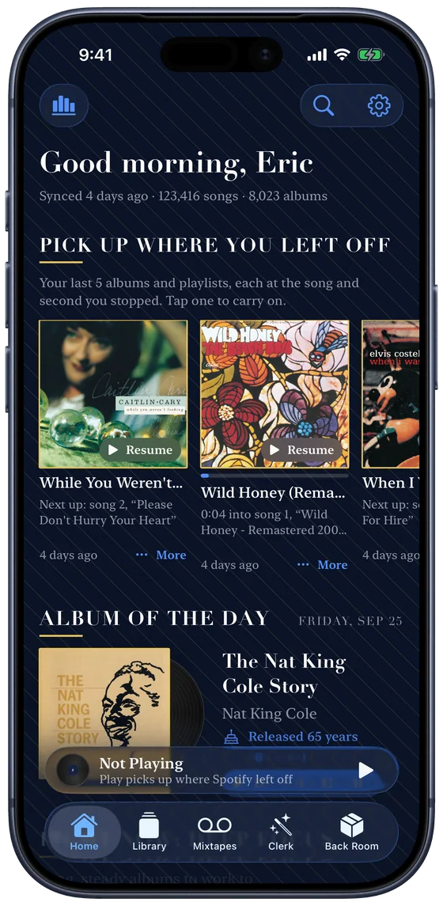
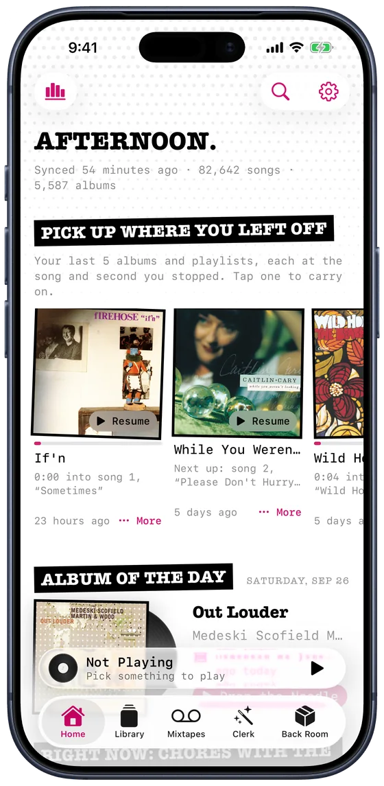
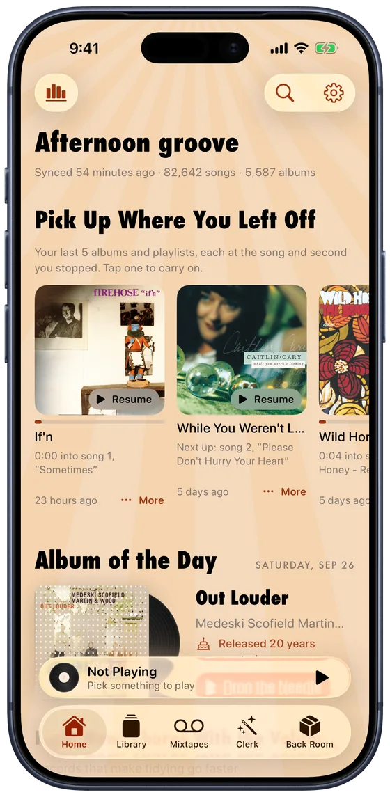
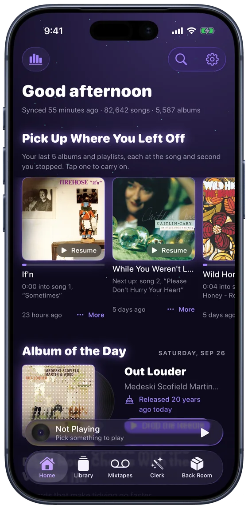
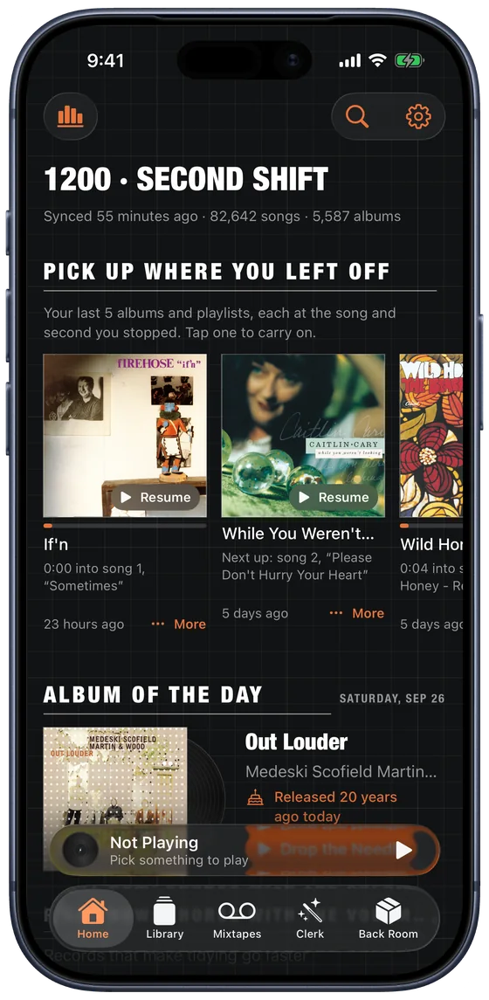
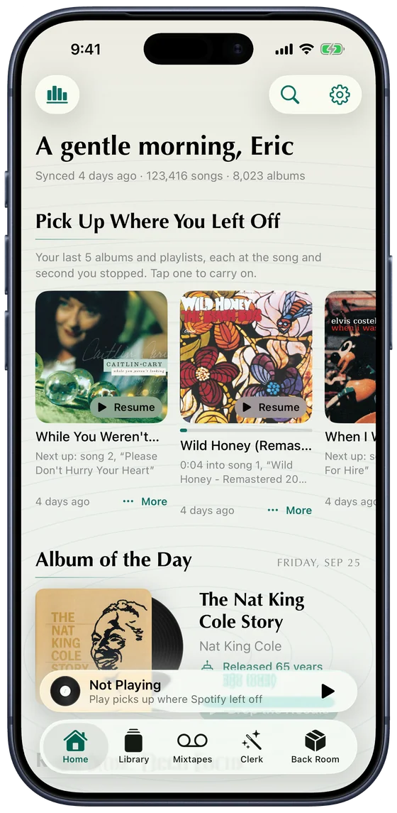
Your library, not a feed.
Your whole library
Every album, song and playlist in your Apple Music library, including songs you added yourself. Playing from Apple Music's catalogue needs a subscription.
Reads you, privately
Requests are read on your device, or on Apple's Private Cloud Compute for the harder ones. No account, no server of ours.
Wherever you listen
Your crates, pins and mixtapes follow you through iCloud. Your Apple Watch is a remote for the phone. Say "Ask the Clerk" to Siri from anywhere.